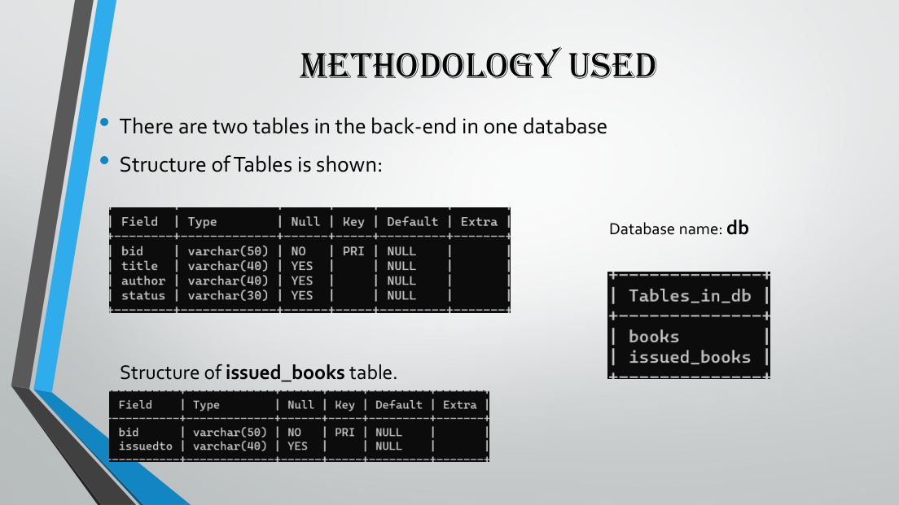
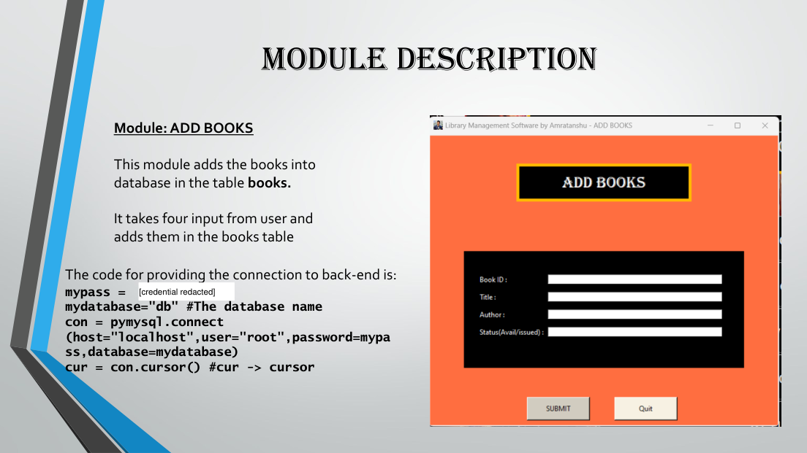
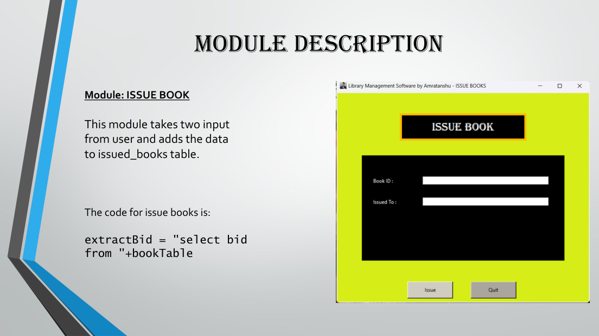

Purpose and scope
The project is a desktop Library Management System intended to digitise routine library record-keeping. The supplied presentation explains that manually maintaining book records for different students becomes difficult, and proposes a computerised backend to manage the catalogue and circulation.
The stated objectives include maintaining records digitally, reducing paperwork, lowering recurring manual effort and enabling a single operator to manage the system.
Technology stack
- Programming language: Python 3
- GUI: Tkinter
- Database: MySQL relational database
- Database connector: PyMySQL, as shown in the code excerpt in the supplied presentation
The presentation describes a desktop GUI connected to a MySQL database named db.
Data model
The supplied database slide (page 5) shows two tables: books and issued_books. The books table stores a book ID, title, author and status; the issued_books table stores the book ID and the student/issuer identifier. The book ID is shown as the primary key in the books table.

Six core modules
The presentation documents six modules: Add Book Details, Delete Book, View Book List, Issue Book to Student, Return Book and Issued Book List.
- Add: captures four book fields and inserts a record into the books table.
- Delete: accepts a book ID and removes related records from both books and issued_books.
- View: displays the book list without requiring user input.
- Issue: records a book ID and the person to whom it is issued.
- Return: removes the corresponding issue record and updates the book status to available.
- Issued list: displays the books currently recorded as issued.


Limitations and possible extensions
The source presentation itself suggests future improvements: a history tab to track previously issued books and a login/authentication system to control who can make changes. These are presented as possible extensions, not as features already implemented.
The supplied material documents the design, GUI screens, database tables and module-level behaviour. It does not include a complete source-code repository or deployment information.